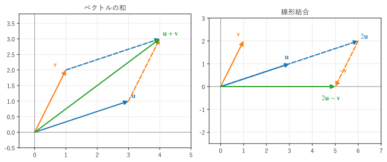
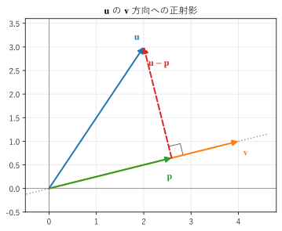

第 2 章 ベクトル
この章では、線形代数の最も基本的な対象であるベクトルを扱う。ベクトルの和とスカラー倍、線形結合、内積、ノルム、正射影、外積を、図と NumPy の計算で確かめる。
矢印としてのベクトル、数の組としてのベクトル
物理では、ベクトルを「大きさと向きを持つ量」として導入する。速度、力、変位などがその例であり、図では矢印で表す。矢印は、始点の位置を変えても（平行移動しても）同じベクトルを表す。
平面上の矢印は、始点を原点に置くと、終点の座標 \((x, y)\) で決まる。そこで、ベクトルを数の組として
と表す。\(v_1, v_2\) をベクトルの成分という。成分が \(n\) 個のベクトルを \(n\) 次元のベクトルと呼び、\(n\) 次元のベクトル全体の集合を \(\mathbb{R}^n\) と書く。
3 次元までは矢印として図に描けるが、4 次元以上は描けない。しかし、数の組としては何次元でも同じように扱える。例えば、ある製品の重さ、長さ、価格、在庫数を並べた 4 次元のベクトルや、128 × 128 画素の画像の画素値を並べた 16384 次元のベクトルを考えることができる。線形代数の強みは、2 次元や 3 次元の図で得た直観を、そのまま高い次元に持ち込めることである。
和とスカラー倍
ベクトルの和とスカラー倍は、成分ごとに計算する。
ここで \(c\) は数であり、ベクトルと区別してスカラーと呼ぶ。
矢印で考えると、和 \(\bm{u} + \bm{v}\) は、\(\bm{u}\) の終点に \(\bm{v}\) の始点をつないだときの、全体の矢印である（図 1 の左）。\(\bm{u}\) と \(\bm{v}\) を 2 辺とする平行四辺形の対角線と言ってもよい。スカラー倍 \(c\,\bm{v}\) は、\(\bm{v}\) と同じ直線の上で、長さを \(|c|\) 倍した矢印である。\(c\) が負なら向きが逆になる。

図 1 ベクトルの和（左）と線形結合 \(2\bm{u} - \bm{v}\)（右）。\(\bm{u} = (3, 1)\)、\(\bm{v} = (1, 2)\)
線形結合
スカラー倍と和を組み合わせた
を、ベクトル \(\bm{v}_1, \ldots, \bm{v}_k\) の線形結合（一次結合）という。図 1 の右は、線形結合 \(2\bm{u} - \bm{v}\) を、\(2\bm{u}\) の矢印の先に \(-\bm{v}\) をつないで作った図である。
線形結合は、線形代数の中心となる操作である。第 3 章で示すように、行列とベクトルの積は列ベクトルの線形結合であり、第 5 章の連立一次方程式は「あるベクトルを、与えられたベクトルの線形結合で表す係数を求める問題」と言い換えられる。
内積
2 つのベクトル \(\bm{u}, \bm{v} \in \mathbb{R}^n\) の内積を、成分の積の和で定義する。
内積の結果はベクトルではなく数（スカラー）である。列ベクトルの記法では、内積を \(\bm{u}^\top \bm{v}\) とも書く（行ベクトルと列ベクトルの積。第 3 章を参照）。
内積から、ベクトルの長さが定まる。ベクトル \(\bm{v}\) の長さをノルムと呼び、\(\|\bm{v}\|\) と書く。
これは三平方の定理を \(n\) 次元に広げたものである。ノルムが 1 のベクトルを単位ベクトルという。0 でないベクトル \(\bm{v}\) を \(\|\bm{v}\|\) で割ると、同じ向きの単位ベクトルが得られる。この操作を正規化という。
内積の幾何学的な意味は、次の式で表される。\(\theta\) は 2 つのベクトルのなす角である。
この式は、2 次元では余弦定理から導ける。\(\bm{u}, \bm{v}, \bm{u} - \bm{v}\) を 3 辺とする三角形に余弦定理を使うと \(\|\bm{u} - \bm{v}\|^2 = \|\bm{u}\|^2 + \|\bm{v}\|^2 - 2\|\bm{u}\|\|\bm{v}\|\cos\theta\) であり、左辺を成分で展開すると \(\|\bm{u}\|^2 + \|\bm{v}\|^2 - 2\,\bm{u} \cdot \bm{v}\) になるからである。
この式から、次のことが分かる。
\(\bm{u} \cdot \bm{v} > 0\) なら、なす角は鋭角（同じような向き）である。
\(\bm{u} \cdot \bm{v} = 0\) なら、なす角は直角である。このとき、2 つのベクトルは直交するという。
\(\bm{u} \cdot \bm{v} < 0\) なら、なす角は鈍角（反対に近い向き）である。
\(|\cos\theta| \le 1\) なので、\(|\bm{u} \cdot \bm{v}| \le \|\bm{u}\|\,\|\bm{v}\|\) が成り立つ。これをコーシー・シュワルツの不等式という。4 次元以上では「なす角」を図で考えられないが、この不等式が成り立つので、逆に \(\cos\theta = \bm{u} \cdot \bm{v} / (\|\bm{u}\|\,\|\bm{v}\|)\) でなす角を定義できる。機械学習で文書や画像の類似度として使われるコサイン類似度は、この \(\cos\theta\) のことである。
正射影
内積を使うと、あるベクトルの、ある方向の成分を取り出せる。ベクトル \(\bm{u}\) から、\(\bm{v}\) を含む直線に垂線を下ろしたときの足を \(\bm{p}\) とする（図 2）。\(\bm{p}\) を、\(\bm{u}\) の \(\bm{v}\) 方向への正射影という。

図 2 \(\bm{u} = (2, 3)\) の \(\bm{v} = (4, 1)\) 方向への正射影 \(\bm{p}\)
\(\bm{p}\) は \(\bm{v}\) のスカラー倍なので \(\bm{p} = c\,\bm{v}\) と書ける。残りの成分 \(\bm{u} - \bm{p}\) が \(\bm{v}\) と直交するという条件 \((\bm{u} - c\,\bm{v}) \cdot \bm{v} = 0\) から \(c\) を求めると、次の式が得られる。
\(\bm{v}\) が単位ベクトルなら分母は 1 になり、\(\bm{p} = (\bm{u} \cdot \bm{v})\,\bm{v}\) と簡単になる。つまり、単位ベクトルとの内積は「その方向の成分の大きさ」である。正射影は、第 9 章の最小二乗法とグラム・シュミットの直交化の基礎になる。
外積
3 次元のベクトルには、もう 1 つの積がある。\(\bm{a}, \bm{b} \in \mathbb{R}^3\) の外積（ベクトル積）を次の式で定義する。
内積と異なり、外積の結果はベクトルである。外積 \(\bm{a} \times \bm{b}\) には、次の性質がある。
\(\bm{a}\) とも \(\bm{b}\) とも直交する。
向きは、右手の親指を \(\bm{a}\)、人差し指を \(\bm{b}\) の向きにしたときの中指の向き（右手系）である。
長さは、\(\bm{a}\) と \(\bm{b}\) を 2 辺とする平行四辺形の面積 \(\|\bm{a}\|\,\|\bm{b}\| \sin\theta\) に等しい。
順序を入れ替えると符号が変わる（\(\bm{b} \times \bm{a} = -\bm{a} \times \bm{b}\)）。
外積は、3D グラフィックスで面の法線ベクトル（面に垂直なベクトル）を求めるときや、力学でトルク（力のモーメント）:math:bm{tau} = bm{r} times bm{F} を計算するときに使う。外積は 3 次元に特有の演算であり、本書のこれ以降の内容では使わない。
NumPy で計算する
リスト 3 で、ここまでの演算を NumPy で計算する。
24def report() -> None:
25 """2 次元と 3 次元のベクトルの演算の結果を表示する."""
26 u = np.array([3.0, 1.0])
27 v = np.array([1.0, 2.0])
28 print("u + v =", u + v)
29 print("2 * u =", 2 * u)
30 print("u @ v =", u @ v) # 内積（np.dot(u, v) と同じ）
31 print(f"|u| = {np.linalg.norm(u):.4f}")
32 print(f"|v| = {np.linalg.norm(v):.4f}")
33 print(f"なす角 = {angle_between(u, v):.1f} 度")
34 p = project(u, v)
35 print("u の v 方向への正射影 p =", p)
36 print("(u - p) @ v =", (u - p) @ v) # 残りの成分は v と直交する
37
38 a = np.array([1.0, 2.0, 3.0])
39 b = np.array([4.0, 5.0, 6.0])
40 c = np.cross(a, b) # 外積
41 print("a x b =", c)
42 print("(a x b) @ a =", c @ a, " (a x b) @ b =", c @ b)
43 print("b x a =", np.cross(b, a)) # 順序を入れ替えると向きが逆になる
関数 angle_between() と project() は、なす角と正射影の式をそのままコードにしたものである。
19def project(u: Vector, v: Vector) -> Vector:
20 """u の v 方向への正射影を返す."""
21 return (u @ v) / (v @ v) * v
実行結果は次のとおりである。
u + v = [4. 3.]
2 * u = [6. 2.]
u @ v = 5.0
|u| = 3.1623
|v| = 2.2361
なす角 = 45.0 度
u の v 方向への正射影 p = [1. 2.]
(u - p) @ v = 0.0
a x b = [-3. 6. -3.]
(a x b) @ a = 0.0 (a x b) @ b = 0.0
b x a = [ 3. -6. 3.]
\(\bm{u} = (3, 1)\)、\(\bm{v} = (1, 2)\) の内積は \(3 \cdot 1 + 1 \cdot 2 = 5\) であり、\(\cos\theta = 5 / (\sqrt{10}\sqrt{5}) = 1/\sqrt{2}\) なので、なす角は 45 度である。正射影 \(\bm{p}\) は \((5/5)\,\bm{v} = (1, 2)\) で、残りの成分 \(\bm{u} - \bm{p}\) と \(\bm{v}\) の内積は 0 になっている。外積 \(\bm{a} \times \bm{b}\) は \(\bm{a}\) とも \(\bm{b}\) とも内積が 0 であり、順序を入れ替えると符号が反転している。
サンプルの全体：ch02_vector_ops.py、ch02_vector_sum.py、ch02_projection.py
この章のまとめ
ベクトルは矢印であり、数の組でもある。数の組として扱えば、何次元でも同じように計算できる。
ベクトルの和とスカラー倍を組み合わせたものを線形結合という。
内積は \(\|\bm{u}\|\,\|\bm{v}\|\cos\theta\) に等しく、内積が 0 の 2 つのベクトルは直交する。
正射影 \(\bm{p} = (\bm{u} \cdot \bm{v} / \bm{v} \cdot \bm{v})\,\bm{v}\) で、ベクトルのある方向の成分を取り出せる。
3 次元のベクトルの外積は、2 つのベクトルに直交し、長さが平行四辺形の面積に等しいベクトルである。